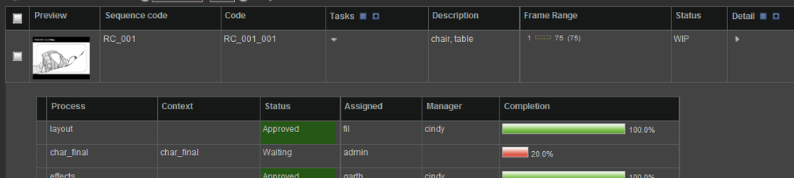

Description
Adding a Simple Search Filter at the top of a view helps filter the table for particular values on certain columns. A filter can be created using a Select Filter Element Widget or by running an expression using a Checkbox Filter Element Widget. (To set up the Select and Checkbox Filter Element Widgets, please refer to the setup docs by the same name.)
Implementation
Below are the steps to modify or add a Simple Search Filter to a view. The Simple Search View for the ticket list in the Scrum Project is used below as an example.
1) Go to the sidebar and open the view:
Admin Views → Project → Manage Side Bar

2) Look for the value in the following field:
Display Definition → Search → Simple Search View
3) Open the Widget Config under:
Admin Views → Project → Widget Config.
Filter by the search_type: scrum/ticket
Filter by the view found in the Simple Search View field of the Manage Side Bar view.
In the Scrum example with the tickets, we would search for the _view_named: simple_search_filter
Note
If the Simple Search View field is empty, TACTIC will look for the default Simple Search View filter named: custom_filter.
4) In the Widget Config entry, edit the config field:
In the example below, the following Checkbox Filter Element Widgets were added: my_tickets, beth_tickets and ted_tickets
<config>
<simple_search_filter>
<element name='assigned'>
<display class='tactic.ui.filter.SelectFilterElementWdg'>
<values_expr>@GET(sthpw/login.login)</values_expr>
<column>assigned</column>
</display>
</element>
<element name='status'>
<display class='tactic.ui.filter.SelectFilterElementWdg'>
<values>new|open|in_dev|need_info|on_hold|need_validation|closed|invalid</values>
<column>status</column>
</display>
</element>
<element name='type'>
<display class='tactic.ui.filter.SelectFilterElementWdg'>
<values_expr>@UNIQUE(@GET(scrum/ticket.type))</values_expr>
<column>type</column>
</display>
</element>
<element name='sprint'>
<display class='tactic.ui.filter.SelectFilterElementWdg'>
<values_expr>@GET(scrum/sprint.title)</values_expr>
<column>scrum/sprint.title</column>
</display>
</element>
<element name='feature'>
<display class='tactic.ui.filter.SelectFilterElementWdg'>
<values_expr>@GET(scrum/feature.title)</values_expr>
<column>scrum/feature.title</column>
</display>
</element>
<element name='product'>
<display class='tactic.ui.filter.SelectFilterElementWdg'>
<values_expr>@GET(scrum/product.title)</values_expr>
<column>scrum/feature.scrum/product.title</column>
</display>
</element>
<element name='customer'>
<display class='tactic.ui.filter.SelectFilterElementWdg'>
<values_expr>@UNIQUE(@GET(scrum/ticket.customer_code))</values_expr>
<column>customer_code</column>
</display>
</element>
</simple_search_filter>
</config>Here are some miscellaneous date related examples:
<element name="dates">
<display class="tactic.ui.filter.DateFilterElementWdg">
<column>creation_date</column>
</display>
</element>
<!-- this makes use of the status log to filter tasks completed or set to review since a particular date -->
<element name='completed_date'>
<display class='tactic.ui.filter.DateFilterElementWdg'>
<column>sthpw/status_log['to_status','in','Complete|Review'].timestamp</column>
</display>
</element>
<element name="date_range">
<display class="tactic.ui.filter.DateRangeFilterElementWdg">
<start_date_col>bid_start_date</start_date_col>
<end_date_col>bid_end_date</end_date_col>
<op>in</op>
</display>
</element>For more examples of the Keyword Search, Select Filter, and Date Filter, refer to those docuements.
Note: To filter for data from another database, the cross_db attribute of the KeywordFilterElementWdg can be used.
<!-- in a task view, search for the shot's title attribute-->
<element name="keywords">
<display class="tactic.ui.filter.KeywordFilterElementWdg">
<mode>keyword</mode>
<column>vfx/shot.title</column>
<cross_db>true</cross_db>
</display>
</element>In a project, items (ie. files, assets) may be related to each other. For example, a car is built with various parts that can be identified separately but are all related to the same car. Another example can be found cinematic film production. The cinematic footage of one movie is commonly broken down into sequences and shots.
How do these relationships work in TACTIC? - Each sType is represented as a table in the database and each entry in the table represents an sObject. The relationships are created when storing matching data "properties" in each of the tables. In the example tables below there are "Sequence" and "Shot" sTypes. The "code" column matches the "sequence_code" column which illustrates which shot is related to which sequence.
| code | description |
|---|---|
SEQ001 | The first sequence |
SEQ002 | The first sequence |
| sequence_code | code | description |
|---|---|---|
SEQ001 | SEQ001_001 | Sequence one shot one |
SEQ001 | SEQ001_002 | Sequence one shot two |
SEQ002 | SEQ002_001 | Sequence two shot one |
In the Schema Editor, relationships are represented by lines connecting the nodes. When these connections are made, the columns used to relate the sTypes can be chosen in the Connection Editor.
To create a new connection, hover over a node and click-drag a connection to the desired node (sType).

Note
The direction of the arrow in the connection indicates from child to parent.
After a connection is made, the Connection Attributes editor will open to enable the choice of column relationships. It is also possible to create new columns from this editor.

Note
The yellow Switch button
in the middle of the tool toggles which node is the child and which one is the parent.
Note (discussion)
Description
The Notes Widget allows users to write notes for a particular item (sObject). This widget allows team members to exchange comments for a process by writing them in the Notes Widget. The notes are displayed chronologically with latest one appearing at the top. The complete history is displayed by default. It’s one of the common columns which can be added in any view for an sType. A similar note entry widget called the Note Sheet Widget, focuses more on the speed of entry rather than the display of the conversation.
Info
Name | Notes |
Class | tactic.ui.widget.DiscussionWdg |
Category | Table Element Widget |
Supported Interfaces | TableLayoutWdg |
TACTIC Version Support | 2.5 |
Required database columns | This widget interacts with the built in sthpw/note table |
Usage
To create a new note, select the New Note button.
This will switch the DiscussionWdg into insert mode where notes and context of the notes can be entered.
In most cases, the grouping for the notes is derived through selecting a context. This context is often chosen in relation to the context of a given task or snapshot (Checkin) for the same parent sObject. This then associates all tasks, notes and snapshots under a specific Search Object. This allows users to retrieve historical data for a Search Object through a context. This answers the question "What’s the history of this Asset from the design department?"
To navigate the history of the notes, click on a particular note and it will expand and display the full note.
Note
Depending on the configuration, the grouping (context) items will be grouped and separated by a group label represented as << label>>. In that case, selecting the group label will trigger a warning pop-up.
To unset a value, you can usually select the empty value with the label -- Select --.
Implementation
The Notes widget is a common column which can be added using the Column Manager. The item name is "notes". A "default" context is used in this simple implementation.
Options
context | a global context can be specified |
append_context | a context can be appended to the current list (deprecated) |
setting | A project setting can be used to drive the contexts. This provides the key of the project setting. |
append_setting | This serves the same purpose as setting but would append the contexts at the end |
include_submission | If set to true, it would include the notes for the submission (a child) of the current sObject. |
Advanced
<element name="discussion" edit="false">
<display class="pyasm.widget.DiscussionWdg">
<context>default</context>
</display>
</element>21.4. Hidden Row
Description
The HiddenRowToggleWdg is used to add a cell to a table which when toggled, exposes a hidden view. This vew supports the embedding the following Widgets:
- TableLayoutWdg
- CustomLayoutWdg
- ViewPanelWdg


Info
Name | HiddenRowToggleWdg |
Common Title | Hidden Row |
Class | tactic.ui.table.HiddenRowToggleWdg |
Category | Table Layout Widget |
Supported Interfaces | TableLayoutWdg |
TACTIC Version Support | 3.0.0 |
Required database columns | none |
Usage
The HiddenRowToggleWdg is primarily a configuration tool which provides very simple usage for the user. By clicking the expand arrow, the hidden row will expand. Also, to batch expand the same HiddenRow for multiple rows in the table, select the desired rows (SObjects) and in the table header, do one of the following:
Click the triangle to expand or collapse the HiddenRow for the selected SObjects.
Options
dynamic_class | The class to embed in the hidden row |
static | The view is loaded when the page loads |
parent_key | The parent key of the parent SObject (Internal) |
Advanced
The following HiddenRowToggleWdg is defined in the definition view for a prod/sequence. The embedded table shows a view of prod/shot SObjects in a view called shot_hierarchy
<element name='shots'>
<display class='HiddenRowToggleWdg'>
<dynamic_class>tactic.ui.panel.TableLayoutWdg</dynamic_class>
<search_type>prod/shot</search_type>
<view>shot_hierarchy</view>
<mode>simple</mode>
<do_search>true</do_search>
<show_row_select>false</show_row_select>
</display>
</element>
The following HiddenRowToggleWdg is used to show a view of prod/asset SObjects which have been planned (assiciated) to a prod/shot SObject. In this case, the available <expression/> option is used in the TableLayoutWdg to get the assets by traversing through the follwoing search types:
prod/shot -> prod/shot_instance -> prod/asset
<element name='assets'>
<display class='HiddenRowToggleWdg'>
<dynamic_class>tactic.ui.panel.TableLayoutWdg</dynamic_class>
<search_type>prod/asset</search_type>
<view>assets_hierarchy</view>
<expression>@SOBJECT(prod/shot_instance.prod/asset)</expression>
<mode>simple</mode>
<do_search>true</do_search>
<show_row_select>false</show_row_select>
</display>
</element>
The following example shows how the dynamic_class is used to point to which widget to use in the hidden row.
<element name='tasks'>
<display class='HiddenRowToggleWdg'>
<dynamic_class>tactic.ui.panel.TableLayoutWdg</dynamic_class>
<search_type>sthpw/task</search_type>
<view>task_hierarchy</view>
<mode/>
<do_search>true</do_search>
<show_row_select>true</show_row_select>
</display>
</element>TACTIC’s Custom Layout Editor provides users with the ability to completely customize the end user inteface. The HTML, Python, Styles, and Behaviours tabs offer the flexibility to dictate the appearance, functionality and actions of generated views. However, there are times where the appearance, functionality and actions need to be dynamic, changing depending on different events or conditions.
Custom URL Configuration encompasses these possibilities by offering the availability of variable options. Views can be modified by options that are set statically by the user and change dynamically with the system. These options can be inserted into code developed to define a view to perform a desired behaviour.
The Custom URL can be configured through Project Essentials under Custom URL. Entries can be added into the table with a specified URL path, pointing to a Custom Layout view to be modified, for example, and the associated HTML code under the Widget column to define the view.
image:media/Custom URL.png[image]
A list of options are available to the user to set within the HTML that defines a view from the Widget column. These options and associated descriptions and values are provided below. The first three options refer to the visibility and usability of the respective user interface element (sidebar, index and admin) when the Custom Layout component is drawn. The palette option establishes the overall color of these respective user interface elements.
Option | Description | Values |
sidebar | Determines whether the sidebar, as seen in the administrative layer, is available in the view. | true/false |
index | Determines whether the element will be displayed with the theming and configuration set up from the index URL. If set to "true", it will only work if there is an entry with a URL as "/index" in the Custom URL table. | true/false |
admin | Determines whether the element will be displayed with the theming and configuration of the administrative layer. | true/false |
palette | Determines the overall color theme of all of the tables and associated menus in the view. | aqua/aviator/bon noche/bright/dark/ silver/origami |
Two examples are shown to demonstrate how to statically set these options to configure a URL, as well as how to specify a view as the home or landing page of a TACTIC project.
Example 1: HTML Element Options
The example below is taking a specific view for a job established by the URL /job/JOB002 and setting the admin, sidebar and palette options inline with the definition of the element tag. Notice that the URL defined is only a portion of a full URL. The full URL would follow a format of http://<IP>/tactic/jobs/job/JOB002. Only the latter portion of the URL is required.
URL Column
/job/JOB002
Widget Column
<?xml version="1.0"?> <element admin='true' sidebar='false' palette='bright'> <display class='tactic.ui.panel.CustomLayoutWdg'> <search_type>my_project/my_sType</search_type> <view>my_view</view> </display> </element>
Example 2: Setting Home Page through URL
The user can set a custom view created in the Custom Layout Editor as the home or landing page when the user and all other users sign in. The HTML set in the Widget column can point to a specific view in the Custom Layout Editor to set as the home page. In this case, the display class would need to be defined as a Custom Layout Widget to accommodate for the use of a Custom Layout view.
Notice how the URL is set as "/index", which differs from the Custom Layout view in the HTML. The URL must be set as "/index" in order to have this view set as the home page.
URL Column
/index
Widget Column
<element name='index'> <display class='tactic.ui.panel.CustomLayoutWdg'> <view>custom_layout_folder/my_custom_view</view> </display> </element>
Dynamically Setting Options
The following examples will demonstrate how to dynamically set options. The first example will demonstrate how to configure multiple views using a dynamic URL following from Example 1 in the Statically Setting Options section. The second example will follow from the second example under the Statically Setting Options section. The Custom Layout view set as the home page will actually utilize mako with HTML in order to set the value of a variable to be used in the HTML. This variable is used to set the display class of the element.
Example 1: Configuring Multiple Views through a Dynamic URL
In Example 1 from the Statically Setting Options section, the view being modified was for a specific job. In this example, you can see that the same modifications can be applied to the views for all jobs. The {…} syntax allows for a variable value. In this case, the "code" variable can change. The job "code" defines the jobs in the project through an alphanumeric sequence, such as "JOB002". This variable syntax allows the URL to keep changing for all the jobs present in the project. This means that different jobs can appear in the same view as it will have the same HTML definition.
Notice how the display class is changed to a Table Layout as opposed to a Custom Layout Widget. This is just to demonstrate the different display classes available to the user as well.
URL Column
/job/\{code}Widget Column
<?xml version="1.0"?> <element admin='true' sidebar='false' palette='bright'> <display class='tactic.ui.panel.TableLayoutWdg'> <search_type>my_project/my_sType</search_type> <view>my_view</view> </display> </element>
Example 2: Custom Layout Editor - Setting Element Display Class in HTML with Changing Mako Variable Value
The focus on this example will be the utilization of Mako and HTML in the Custom Layout Editor for the view defined in Example 1 of the Statically Setting Options section. The code from Example 1 of the Statically Setting Options section is shown again here for reference.
The Mako code is set up to determine whether a search key is existent in TACTIC. What this means is TACTIC is aware if an entry with a specific ID already exists in the sType table. This code is utilizing that ability and checking whether that entry does already exist. The entry’s existence determines what the display_widget variable will be set to.
In the HTML for the "last_name" element, the display class is variable as indicative of the syntax "${…}", which wraps the variable display_widget. Based on the existence of the search key, the display class of the "last_name" element will be either a text input widget or a lookahead text input widget.
URL Column
/index
Widget Column
<element name='index'> <display class='tactic.ui.panel.CustomLayoutWdg'> <view>custom_layout_folder/my_custom_view</view> </display> </element>
HTML Tab in Custom Layout Editor for custom_layout_folder/my_custom_view View
<div>
<div>
<%
sType2_key = kwargs.get("search_key") or ""
if sType2_key:
display_widget = "tactic.ui.input.TextInputWdg"
else:
display_widget = "tactic.ui.input.LookAheadTextInputWdg"
%>
</div>
<table>
<tr>
<td>Last Name</td>
<td class="spt_element">
<element name="last_name">
<display class="$\{display_widget}">
<search_type>my_project/my_sType</search_type>
<column>my_view2</column>
<search_key>$\{sType2_key}</search_key>
<filter_search_type>my_project/my_sType</filter_search_type>
<value_column>id</value_column>
<current_value_column>id</current_value_column>
</display>
</element>
</td>
</tr>
</div>Drop Item

Description
Facilitates drag-and-drop of an item between 2 views. For example, drag a user from one view and drop it into a user group.
Info
Name | Drop Element Widget |
Common Title | Drop Element Widget |
Class | tactic.ui.table.DropElementWdg |
TACTIC Version Support | 3.0.0 |
Required database columns | none |
Usage
For example, in the Shot Planner view, individual assets can be added to a shot by simply dragging the asset from one view and dropping it onto the shot in another view. Once the asset is dropped onto the shot, the asset will appear in the column with a "NEW" flag. Hit the save button in the shot view to preserve the changes.
Options
Accepted Drop Type | The acceptable sType that can be clicked on to be dragged and dropped onto another type. For example, sType is vfx/asset. |
Instance Type | For the item that is being dragged, it is the sType that the item can be dropped onto. For example, sType is vfx/asset_in_shot" |
Cbjs Drop Action | The call back JavaScript to run each time an item is dropped into the column. |
Display Expr | The expression to run to display in view mode. For example "@" |
Implementation
A many-to-many relationship between the 2 types needs to be created in the Schema Editor. By convention, the "join" node that need to be created to connect the 2 types should be named: "<sType1>_in_<sType2> ". For example, for the join node named: "asset_in_shot". The "asset_in_shot" node stores the data representing the relationship between the asset and which shot it appears in.
The view where the item to be dropped onto the Drop Element column of, can exist in a custom layout table or a view opened in a new window within the TACTIC session.

<element name="asset_drop" width="333px" edit="false">
<display class="tactic.ui.table.DropElementWdg">
<instance_type>vfx/asset_in_shot</instance_type>
<accepted_drop_type>vfx/asset</accepted_drop_type>
<css_background-color>#425952</css_background-color>
</display>
<action class="tactic.ui.table.DropElementAction">
<instance_type>vfx/asset_in_shot</instance_type>
</action>
</element>Examples
Example 1: implementation of "asset_in_shot', where an asset can be drag and dropped onto a shot:
<element name="asset_drop" width="333px" edit="false">
<display class="tactic.ui.table.DropElementWdg">
<instance_type>vfx/asset_in_shot</instance_type>
<accepted_drop_type>vfx/asset</accepted_drop_type>
<css_background-color>#425952</css_background-color>
</display>
<action class="tactic.ui.table.DropElementAction">
<instance_type>vfx/asset_in_shot</instance_type>
</action>
</element>Example 2: implementation of "user_in_group', where a user can be drag and dropped onto a group:

<element name="users">
<display class="tactic.ui.table.DropElementWdg">
<css_background-color>#425952</css_background-color>
<instance_type>sthpw/login_in_group</instance_type>
<accepted_drop_type>sthpw/login</accepted_drop_type>
</display>
</element>Expression Value Element


Description
The Expression Value Element widget accepts a TACTIC Expression as the input and displays the evaluated expression as the output.
Info
Name | Expression Value Element Widget |
Class | expression_value |
TACTIC Version Support | 2.5.0 |
Required database columns | Yes, a database column by the same name. |
Usage
For example, we can dynamically display the number of login names in the login table. This would be an example of an absolute expression because the expression does not take into input any data from the row the field is on. A relative expression has access to the row and table information that the row the expression is on.
Note
The difference between an absolute expression and a relative expression:
-an absolute expression does not take into input any data from the row or table that the field exists on
-a relative expression has access to the row and table information that the field exists on
Implementation
Go into edit mode for the Expression Value Element widget. Input an absolute TACTIC expression as the value.
In display mode, this widget will display the result of the evaluation of the expression.
Options
There are no options available for this widget.
Example 1
For example, enter the following absolute TACTIC Expression as the value for the Expression Value Element widget:
@COUNT(sthpw/snapshot.sthpw/file)
In display mode, this widget will evaluate the expression and display the count of the number snapshot files in the database.
Example 2
For example, enter the following absolute TACTIC Expression as the value for the Expression Value Element widget:
@COUNT(sthpw/login.sthpw/login)
In display mode, this widget will evaluate the expression and display the count of the number of logins in the login table.
Example 3
For example, enter the following absolute TACTIC Expression as the value for the Expression Value Element widget:
@GET(sthpw/task["context = 'model'"].code)
In display mode, this widget will evaluate the expression and display the code for all the tasks where the context is model.
To submit an official support ticket to the Southpaw Support Team you will need a TACTIC Ticketing Account. Ticketing accounts are typically setup for users by Southpaw as part of official TACTIC support. Contact your TACTIC representative for more information.
You may also visit the Southpaw Technology Support site at:
Note
If you do not already have an account for the support site, you may sign up from the login page. Accounts on the support site need to be verified by the support team. This typically takes about 24 hours
.